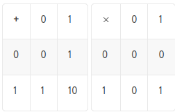
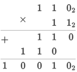

© Игорь Григорьевич Пеймер, 2024 г.
Число — это абсолютное понятие, выражающее количество.
Цифра — это символ, используемый для записи чисел.
Разряд — это положение цифры в числе.
Позиционная система счисления определяется натуральным числом q > 1, называемым основанием
системы счисления.
Количество цифр, используемых в системе счисления, определяется её основанием.
При записи числа основание системы счисления q пишется срава внизу:
(a3a2a1a0)q, где an ∈
[1..q-1]
В шестнадцатиричной системе (q=16) используются цифры 0,1,2,3,4,5,6,7,8,9,A,B,C,D,E,F
an-1qn-1+an-2qn-2+...+a1q1+a0q0
Пример:
220012 = 1 * 24 + 1 * 23 + 0 * 22 + 0 * 21 +
1 * 20
CF316 = 12 * 162 + 15 * 161 + 3 * 160
Таблицы сложения и умножения для двоичной системы счисления:
Пример умножения чисел:
100101101102 = 010 010 110 1102 = 22668
100101101102 = 0100 1011 01102 = 4B616